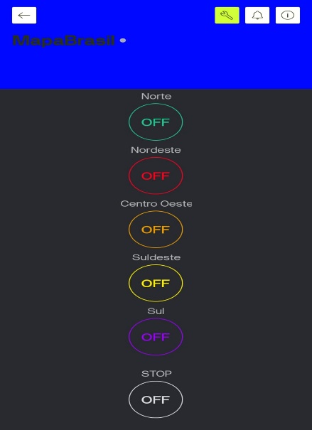
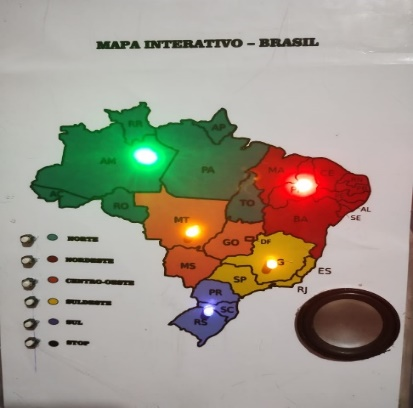
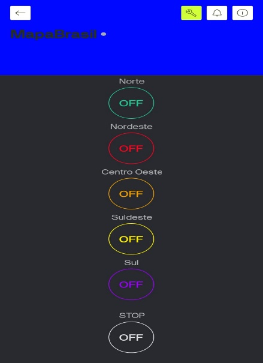
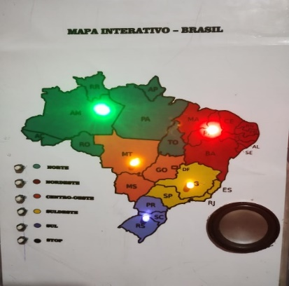

Resumo
O projeto “Mapa Interativo do Brasil” foi desenvolvido com o objetivo de promover o conhecimento cultural das cinco regiões brasileiras de forma educativa e tecnológica. Utiliza ESP32, LEDs representando cada região, botões físicos, módulo DFPlayer Mini e controle remoto via Blynk IoT.
Introdução
O Mapa Interativo do Brasil integra tecnologia, cultura e educação, permitindo aos usuários conhecer músicas, falas e elementos culturais das cinco regiões do país através de estímulos visuais e sonoros.
Materiais Utilizados
- ESP32 – Microcontrolador principal
- DFPlayer Mini – Reprodução de áudio
- 5 LEDs coloridos – Representando regiões
- 6 botões físicos
- Cartão de memória 4 GB
- Alto-falante 3 W / 4 Ω
- Blynk IoT – Controle via Wi-Fi


Metodologia
O sistema foi montado em protoboard, com LEDs e botões conectados ao ESP32. O DFPlayer Mini foi integrado via comunicação serial para tocar músicas e falas regionais. O Blynk IoT foi configurado para permitir controle remoto das regiões.
Resultados
- Funcionamento estável dos LEDs
- Reprodução sonora sincronizada
- Controle remoto eficiente via Wi-Fi
- Baixo consumo de energia
Impacto Educacional
O projeto estimula aprendizagem multissensorial, valorização cultural e interdisciplinaridade entre programação, geografia e tecnologia.
Futuras Melhorias
- Sensores de presença
- Tela LCD com informações extras
- Painel solar
- Aplicativo móvel gamificado
 


